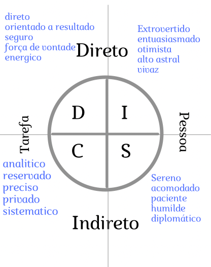

Principios básicos de Redes. Informações dos modelos OSI, TCP/IP.
Este resumo trata de como a comunicação é importante e como ela tem os pros e cons (vantagens e desvantagens) tanto na vida cotidiana, como no ambiente de trabalho, neste caso é para informação da segurança da informação. Antes é preciso saber que existe dois modos o qual nosso cerebro trabalha e relaxa, descrito pelo Doutor Langer(pag. 11).
"O modo alfa é quando o cerebro de alguém esta funcionando entre 8 e 13 cps (ciclos por segundo), em geral chamado de 'relaxado' e o modo Beta que é quando o cerebro de alguém está funcionando entre 14 e 100 cps, isto significa que o cerebro está em alerta, observante e conciente das coisas ao redor."
Ouseja manipulação é o ato de influenciar uma pessoa estando no modo alfa.Além disso existe um outro estudo realizado pelo Doutor Paul Zak lançado no livo " A molécula"(2012), onde explica a respeito de um hormónio chamado oxitocina que é liberado pelo nosso cerebro na corrente sanguinea quando temos a sensação ou sentimento de "confiança" de acordo com o estudo, este fenômeno pode acontecer, atravéz do telefone, da internet, em pessoa. Outro químico liberado pelo nosso cerebro na corrente sanguinea é chamado de "Dopamina" que é um neurotransmissor liberado em momentos de prazer, felicidade e por estímulo. Imagina uma mistura de oxitocina e dopamina o qual abre qualquer "porta" segundo o autor. Acontece a dopamina também é liberado numa conversação e é nisso que a Engenharia social está focada
Alguns métodos de aplicação da engenharia social usados por cracker ou hackers não éticos são: SMiShing (SMS): que é a prática de enviar mensagens de texto usando nomes de Empresas ou Bancos conhecidos para induzir a pessoa e pegar dados particulares, por tanto se recebe mesnagens de números desconhecidos informando que é um banco ou uma outra entidade, desconfie e informe-se. Vishing (voz): método extorsão, só que dessa vez é por ligação e menos comuns mensagens de voz. Da mesma forma que o SMiShing usam, falsos credenciais para obter dados particulares. Phishing (isca) : Este ataque rouba informação pessoal atravéz de mensagens que contém links apelando para cliclar. Personificação: que é o menos comun de todos, mas não menos efetivo, que é nada menos que a propria pessoa fazendo o golpe.
Dentro da engenharia social, existe um método muito usado que chama-se de OSINT, que é usado para coletar informação e a partir deste criar um plano de ataque, este método é usado porque permite encontrar informação nas proprias redes sociais ou navegadores usando alguns comandos para filtrar a informação e ter com mais precisão além disso qualquer um pode acessar sem quebrar leis ou estar comentendo um crime. Claro que existem algumas exceções mas no geral é aberto ao público. Más não parece ser tão fácil como esta escrito, porque precisa-se desenvolver algumas habilidades e algumas habilidades tem à ser desenvolvidas como a de observar, segundo o autor do livro quando se está fazendo ingenharia social, a pessoa tem que prestar atenção em tudo o que puder, para tentar entender o que vai encontrar na frente e como lidar, de outra forma alguns pequenos detalhes podem prejudicar no trabalho e tudo isso quando é feito a personificação mas algumas vezes uma foto ou imagem, ou uma investigação em pessoa como diriamos no "tête-a-tête" não é o suficiente e precisa-se fazer um OSINT para preencher os vazios, ouseja, as informações que faltam ou que acha que estão faltando.No livro pode-se ver que engenharia social usa muito os navegadores para fazer OSINT, além disso navegadores como "google" tem uns scripts para o público poder usar, que é chamado de "Google hacking" que turbina e filtra melhor as buscas, mas não é adecuado fazer certos comandos em empressas ou bancos, já que tem firewalls ou IDS e tudo o que feito na internet deixa um rasto, na mitología sería algo como o Oráculo que tudo que você pergunta é respondido. Quando se fala de fazer engenharia social "ética", ouseja, que tem um contrato e clausulas e tuda a documentação, os alvos são gigantes, podendo ser empresas de porte medio, grande como: bancos, organizações, sites guvernamentais e outros. Todos eles tem em comum as plataformas digitais ou web sites.
A engenharia social é em esencia "comunicação" por isso sempre terá uma fonte,terá uma mensagem, um canal e um receptor. Um exemplo de enghenaria social no dia a dia, você comprimenta seu vizinho, a fonte é você, é de você que está partindo uma informação, a mensagem é o que você fala: "bom dia"; "eae vizinho, tudo bem?", o canal de comunicação é o ar é por ele que se propaga as ondas de som até o receptor (o vizinho). Segundo o autor, para aprimorar as habilidades de comunicação para fazer engenharia social como parte do trabalho profissional são ilustradas varias histórias, como: O que você pensaría sobre uma pessoa que está prestes a se comunicar mas com a necessidade de você deixa-la confortável e segura? Imagine que você está parado na rua, e que alguém está caminhando na sua direção e parece que obviamente irá lhe abordar. Como você se sente e o que você pensaría.?? Segundo o autor por tuda a experiência que tem, identificou quatro questões:
Agora veremos os tipos de personalidade que ilustra o livro como DISC que significa:
D = direto/ dominante
I = influente
S = supporter (prestativo)/ Steady (Firme)
C = conciente/ Simpático
além disso há padrões como: Direto, Indireto; direcionado a tarefas ou pessoas.
Alguma vez assistiu na TV ou ao vivo, que os cozinheiros chef, tem uma variedade de facas, todas com um formato diferente, umas mais finas, outras mais largas,outras com buracos,etc. Dessa mesma forma que é ilustrado as personalidades das pessoas, cada um tem uma e serve para um propósito. Agora voltando aos padrões, direto/indireto; tarefa/pessoa, bora descobrir como é seu estilo, vamos separar em dois grupos [direto/indireto] e [tarefa/pessoas]
Qual é o seu estilo de comunicação, você é uma pessoa direta ou indireta? Você tem problema que as pessoas sejam diretas com você ou você se sente bem? Agora que você sabe que tem um estilo direto ou indireto. Você é uma pessoa orientada a coisas ou pessoas?, ouseja, quando você está fazendo um trabalho em grupo, você se preocupa por terminar a tarefa designada para você e pronto ou você ajuda os outros a terminarem suas tarefas juntos? A sua resposta pode ser: Tarefa ou Pessoas Agora que você sabe as duas respostas veja no quandro a seguir a sua personalidade.

Com cada estilo, se você está numa posição ou não: O comunicador D se for usar autoridade: seja direto e conciso, crie argumentos fortes e foque em responder o "que". Se o comunicador D for usar um outro pretexto: relembre toda hora o "que " e não o "como" dê enfase ao resultado com lógica e concorde com fatos e posições e não com somente com a pessoa. O comunicador I se for usar autoridade: seja amigável e calmo, permita a outra pessoa se expressar o maximo que puder na conversa para ajuda-la a que suas ideias se convirtam em ações. Se comunicador I for usar outro pretexto: responda mais o "quem", foque o novo e o especial, ajude no "dar e receber" O comunicador S na hora de usar autoridade: seja sistemático e objetivo, além de manter a calma e ser amigável, use a coerência e responda mais o "porque". Se o comunicador S for usar outro pretexto: seja paciente, use mais nas perguntas o "como" e foque no time se tiver. O comunicador C se for usar autoridade: seja detalhista, confiável, dê reconhecimento aos outros e responda mais o "como".
Uma frase legal que tem este livro que serve para muitos contextos é "DEIXE AS PESSOAS SE SENTINDO BEM POR TER CONHECIDO VOCÊ" e isto também serve para ficar consciente que crackers ou hackers que cometem crimes usam este tipo de filosofia e assim para você saber se defender e pegar o malandro no pulo, mas por outro contexto isto pode também melhorar a comunicação num ambiente de trabalho ou em uma engenharia social ética. O intuito do autor não você procurar jeitos de explorar ou manipular alguém. Por outra parte, procurar alterar seu estilo para se comunicar com as pessoas no mesmo nível em que estas pessoas se sintam feliz.
Agora quem não assistiu "Missão impossível" com o Tom Cruise fazendo varios papeis de diferentes pessoas, e diferentes vestimentas, tendo diferentes caracteres para interpretar pessoalmente e não atravez de ligações ou mensagens de texto, à isto que o autor do livro chama "Transforme-se em quem você queira ser", obviamente este método é a personificação que já foi mencionado antes. O pretexto ou desculpa é definido como a prática de se apresentar como alguém mais para obter informação particular.Não é só criar uma "mentira", em muitos casos é criar uma nova identidade para manipular e que todo praticante deste método tem um propósito em comum: A INVESTIGAÇÃO
Re-lembrando as pergumtas para deixar confiante alguém dentro dos primeiros 5 a 10s ou 15s, são:
Quem é você?
O que você quer?
Você é uma ameaça?
Quanto tempo irá demorar?
Imagine o alvo(A) quer saber tudo isso o mais pronto possível, o engenheiro social (E):
A: quem é você?
E: eu sou um inspector de segurança enviado pela corporação "X" para fazer uma auditoria para ter certeza que todas as políticas estão sendo cumpridas.
A: o que você quer?
E: Eu só preciso de 15 minutos dos seu tempo para fazer uma breve e rapida auditoria.
A: Você é uma ameaça?
E: Há uma urgência para fazer isto, mas ninguém está em problemas.
A: Quanto tempo isto irá demorar?
E: Se der tudo certo menos de 15 minutos.
Um outro capitulo muito interessante é a mentalidade de Tribu que faz referência a uma identidade de uma tribu simples, ou um certo grupo e este pode ser: um estilo de uso de roupa, um grupo de trabalho, um grupo que comparte os mesmos interesses ou atitudes, essa comodidad entre os membros é que cria um tribu. Muitas vezes visto em pegadinhas na TV ou nas redes Sociais: "Experimentos sociais." Onde uma pessoa vestida com roupas rasgadas ou um pouco sujas dando aparência de pessoa de rua fica em uma passagem num lugar executivo, sentada ou de pé segurando com as mãos a parte do estômago fazendo refêrencia a que está passando mal, não recebe ajuda e respondendo as perguntas :
Quem é você? (quêm é está pessoa?)
- Eu nem sei, parece um drogado ou um pessoa de rua, as vezes é até um malandro, será que tem uma doença e seu eu a ajudo, posso me contagiar?
O que você quer? (o que está pessoa quer?)
-As vezes quer dinheiro, o as vezes realmente quer uma ajuda mas eu estou tarde para o trabalho ou reunião, ou até as vezes essa pessoa quer que eu pare para eu ser uma vitima de roubo ou tirar meu rim.
você é uma ameaça?
- o que se essa pessoa é um drogado ou um malandro?...,e se eu chegar perto ele me ataca ou se realmente está doente e sou contagiado.
Quanto tempo isto irá demorar?
- Essa pessoa não está segurando um pote para pôr dinheiro, acredito que irá demorar muito, vai que eu tenho que leva-la até um hospital, isso vai levar o dia inteiro e a minha reunião?
Agora se esta pessoa está vestida da mesma forma que as pessoas que circulam essa passagem executiva, seria algo assim como:
Quem é você? (que é esta pessoa)
- ele é um de nós, usa paletó e precisa de ajuda.
O que você quer? ( o que esta pessoa precisa)
- Ele precisa ajuda e eu devo ajudar a um colega
você é uma ameaça?
-obviamente não, porque está bem vestido
Quanto tempo irá demorar?
-Isto não importa, porque ele é um de "nós" e precisa de nossa ajuda.
Agora vejamos o que é um rapport o que significa "trazer de volta" ou "criar uma ligação". De acordo ao autor do livro, há pelo menos 10 principios para construir um rapport mas não irei mencionar todos por causa de ficar chato ou ficar muito longo o texto.
Uma delas é "Cancelar seu ego"
É literalmente fazer de conta que deixa de lado seu ego, ouseja, deixar de precisar ser primeiro, ser correto, ou que os outros vejam você como inteligente, do seu conhecimento do que é certo ou errado. Quando você cancela seu ego você sede um espaço para a outra pessoa, mas não é fácil você fazer de conta que está correto. Olha esse exemplo:
Você está esperando em uma fila para entrar na quitanda ou no varejão e você escuta uma conversa que alguém diz: "Eu ouvi de uma fonte confiável que para você se curar de todas as alergias que tem, você precisa lavar seu rosto com uma vitamina de leite e mel e deixar secar por si só ,por 3 vezes ao dia"
Muitas pessoas sabem que isto não tem uma avaliação científica, se a sua reação foi "meu deus, kkk isso é ridículo", ou "isso aí é uma das coisas mais tontas que eu ouvi", então você não está aplicando o cancelamento do ego. Para cancelar o ego, precisa ouvir o que os outros pensam de certo assunto, e você pensar algo assim como "é a sua opinião, está no seu direito e me deixe entender o seu ponto de vista".
Um outro principio é "O principio da Reciprocidade"
ES: Olha, eu posso te fazer uma proposta, eu tenho um cupom para qualquer pizzeria que ainda não usei e quero trocar por uma boa ideia que você pode ter....
Agente: Eu gosto "Pizzas do Tony" e o que eu tenho que fazer?
ES: Bom, eu preciso enviar de volta um Ipad para um agente que trabalha ai,mas eu não tenho o endereço da casa dele, o que você acha se eu envio para essa compania o pacote e vocês enviam para casa dele.?
Agente: Desculpa, mas eu não posso, na empresa temos uma política que diz que não podemos ficar responsáveis por pertencias que foram encontradas fora do carro.
ES: entendi, faz sentido, que droga! E agora não sei o que fazer. E o que você acha se você me passa o endereço dele assim eu diretamente envio para casa dele.
Agente: Olha, eu não deveria fazer isso, mas eu passarei o endereço dele, assim você resolve isso de vez.
SE: você é um gênio! Porque eu não tinha pensado nisso? Quere saber uma coisa, quando você me envie o endereço dele eu envio o cupom para você já já.
No livro tambem há descrições corporais, que não irei describir aqui, mas com as pessoas que convivimos podemos apreciar quando uma linguagem corporal é de :
Imagine todas essas caras, então é mais o menos isso que o livro descreve. Por último o foco do livro: Hackeando Humanos Também sem entrar nos detalhes, existem 5 passos para fazer um trabalho de engenharia social e estes são:
Todo este planejamento é usado para um trabalho profissional, isso quer dizer que a pessoa requer de uma permissão escrita detalhando todos os ataques que serão realizados, por exemplo: gravar audios, explorar falhas, vulnerabilidades com o propósito de educar e ter um ambiente seguro de protecção de dados, também está incluso o armazenamento ,o transporte e o uso desses dados, tudo no ambiente profissional para garantir um documento que "tire você da prisão de graça" onde estará descrito tudo o que você irá e o que não irá fazer, tudo incluído. Mas o que isto tem a ver com criar uma cultura de um ambiente seguro no lugar do seu trabalho? TUDO! com um treinamento apropriado, lembretes, e recompensas, você cria uma cultura onde os empregados são cientes que por mais que seja uma decisão que pareça insignificante pode causar um efeito de longa duração e que também como grandes decisões podem ser devastadoras se eles fizerem escolhas erradas.
Principios básicos de Redes. Informações dos modelos OSI, TCP/IP.